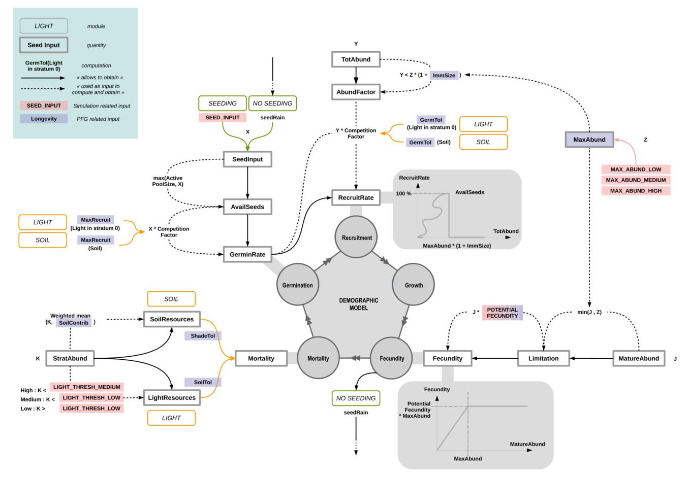

FATE tutorial 0 - Modelling framework
Source:vignettes/fate_tutorial_0_modelling_framework.Rmd
fate_tutorial_0_modelling_framework.RmdConceptual diagram
The whole area is divided in grid-cells in which an independent demographic model regulates the PFG life cycle. PFG abundances are structured by age into cohorts and each cohort is attributed to a height stratum according to the growth parameters.
Different submodels affect this cycle at various levels :
Interaction through light and/or soil resources regulates interactions between cohorts affecting germination, recruitment and survival.
Habitat suitability affects the recruitment and fecundity rates.
The seed dispersal model makes
FATEspatially explicit by connecting grid-cells.
It depends on the amount of seeds produced by mature plants and affects each PFG’s seed bank in each cell.Disturbances affect PFG survival and fecundity.
Life cycle of each PFG and influences from sub-models
Only three age classes are considered : germinant, juvenile and mature.
- The recruitment is influenced by the habitat suitability and the biotic interactions.
- Mortality occurs when light or soil conditions are not favorable or when the PFG completes its life span.
- In addition, the disturbance regime directly affects juvenile or mature PFG and may for instance result in PFG death, impede seed production by reducing mature PFG age to N-1, or revitalize senescents by reducing their age to M-1.
The timestep is at the year level : seasonality is not included within each timestep, but communities go through 4 states :
- Check of survival : what are the pixel resources (in terms of light and soil) of the previous year, and can the PFG stand them ?
- All PFG grow one-year older, and too old PFG die.
- New pixel resources (in terms of light and soil) are calculated with the actual community, as well as the seeds produced. Recruitment of new individuals from the previous pool of seeds occurs.
- If some perturbations are defined, community is impacted in function of the PFG responses to the disturbance(s).

Calculation of pixel resources
Light and soil resources are proportional to the abundance of the PFG community of the pixel. They are both converted into qualitative classes (Low, Medium or High), for each height stratum (concerning light) and for each PFG (according to its tolerance, regarding soil). The response of each PFG to each resource level is defined in function of age (Germinant, Immature and Mature), in a semi-binary way for light (bottom right), and in a more quantitative way for soil (bottom left).
Structural equations

Influence of environment (habitat suitability) :
-
getEnv…() functions :
All the \(\text{getEnv}...()\) functions represent the influence of the habitat suitability if the module is selected (seeDO_HABITAT_SUITABILITYparameter in GlobalParameter file).
They can have effect on different processes, such as mortality, recruitment or fecundity, depending on whether the habitat within the pixel is suitable or not for the considered PFG.
-
Is the habitat suitable ? :
Each year (timestep), the values contained in each PFG habitat suitability maps will be compared to a reference value :- if superior, the environment is considered suitable for the PFG (hence \(\text{getEnv}...()\) functions will return
1) - otherwise, the environment is considered unsuitable for the PFG (hence \(\text{getEnv}...()\) functions will return
0)
- if superior, the environment is considered suitable for the PFG (hence \(\text{getEnv}...()\) functions will return
Depending on the parameterisation chosen, (see HABSUIT_OPTION parameter in GlobalParameter file), the reference value can be set in two different ways.
Lifespan & maturity :
-
Lifespan :
In theory, the lifetime of a species could be influenced by the environment, but this is currently not the case.
Hence, habitat or not, \(\text{getEnvMort}() = 1\).
\[\text{LifeSpan} * \text{getEnvMort}()\]
-
Maturity time :
The time from which a PFG is able to produce seeds can also be influenced by its habitat, in a negative way :
\[\begin{align} \text{maturityTime} &= (\text{LifeSpan} - \text{Maturity}) * (1.0 - \text{getEnvGrowth}()) + \text{Maturity} \\ \text{maturityTime} &= ceil(\text{maturityTime}) \end{align}\]
If DO_HABITAT_SUITABILITY model is NOT selected, or the habitat is suitable, then \(\text{maturityTime} = \text{Maturity}\).
Otherwise, it the habitat is NOT suitable, \(\text{maturityTime} = \text{LifeSpan}\), which means there will be no fecundity, and then no seeds produced.
Carrying capacity (mature vs immature) :
-
Immature :
Depending on the PFG life-form (herbaceous, chamaephytes, phanerophytes), immature individuals may no take as much space as mature individuals (e.g. young tree vs old tree). Hence, when calculating total abundance of plants, which is used as a proxy of space occupation, abundance of immature individuals is weighted by their relative size compare to mature individuals : \(\text{ImmSize}\) (seeIMM_SIZEparameter in Succession files).
-
Mature - Global carrying capacity :
\(\text{MaxAbund} \in {1,2,3}\) defines the maximum abundance that can be reached by a mature PFG. It should be inversely proportional to the space that the PFG can occupy, with taller PFG generally having fewer individuals than for example herbaceous within the same space (seeMAX_ABUNDANCEparameter in Succession files). It is converted to abundance-related values when contributing to structural equations (seeMAX_ABUND_{...}parameters in GlobalParameter file).
Germination :
-
Condition on carrying capacity :
A condition is set to help regulate populations : new individuals only grow if there is not yet too many individuals within the pixel, i.e. if the total abundance of the PFG does not exceed its global carrying capacity :
\[\begin{align} \text{totAbund} &= \text{AbundMature} &+ \text{AbundImmature} * \text{ImmSize} \\ \text{globalCC} &= \text{MaxAbund} &+ \text{MaxAbund} * \text{ImmSize}\\ &\text{if (totAbund} < \text{globalCC)} \\ &\{ \\ & ... \\ &\} \end{align}\]
-
Condition on pixel resources :
\(MaxRecruit\) corresponds to percentage of seeds that will germinate depending on the pixel resources (light, soil) in stratum 0 (which represents the enforced dormancy) (seeACTIVE_GERMparameter in Light and Soil files).
The number of germinating seeds is obtained by weighting the number of available seeds by this germination rate.
If the module is selected (seeDO_HABITAT_SUITABILITYparameter in GlobalParameter file), the habitat must be suitable, otherwise the recruitment will be null.
\[\begin{align} \text{RecruitmentRate} &= \text{GerminationRate} &* \text{ getEnvRecrRate}() \\ &= \text{AvailSeeds} * \text{MaxRecruitment} &* \text{ getEnvRecrRate}() \end{align}\]
Fecundity :
-
Potential fecundity :
Each PFG can produce a fixed maximum amount of seeds in optimal conditions (seePOTENTIAL_FECUNDITYparameter in Succession files). Due to lack of empirical data, this amount is often set at the same value for all PFG.
-
Produced seeds :
At each time step, the number of seeds that will be produced by a PFG depends both on the number of mature individuals of this PFG within the considered pixel, and on the suitability of the pixel if the module is selected (seeDO_HABITAT_SUITABILITYparameter in GlobalParameter file) (no seeds produced if the habitat is not suitable) :
\[\text{Fecundity} = min(1, \frac{\text{AbundMature}}{\text{MaxAbund}}) * \text{PotentialFecund} * \text{getEnvFecund}()\]
If \(\frac{\text{AbundMature}}{\text{MaxAbund}} \geqslant 1\), the PFG has reached its annual carrying capacity : it is in optimal conditions and will produce its maximum amount of seeds (\(\text{PotentialFecund}\)). Otherwise, this amount will be reduced in proportion.
ANNUAL SEED CYCLE : (combining all previous information)
Germination occurs depending on the current abundance of the PFG inside the pixel : if it reaches the carrying capacity of the PFG = \(\text{MaxAbund} * (1 + \text{ImmSize})\), no seed germinates. The number of produced seeds is proportional to the current abundance of mature individuals only.